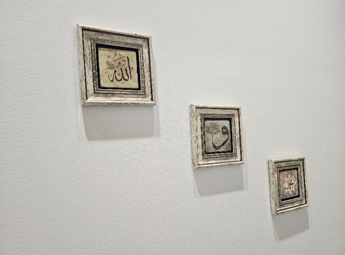
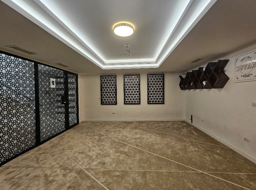

DIVAN Islamski edukativni centar, smješten na Starom Aerodromu u Podgorici, predstavlja značajan iskorak u savremenoj islamskoj edukaciji i društvenoj angažovanosti muslimanske zajednice u Crnoj Gori. Ovaj objekat nije samo vakuf – vjerski dar zajednice – već i središte obrazovanja, kulture i međusobnog povezivanja.
Pocetna
Ovaj Centar je svečano otvoren 28. decembra 2019. godine. Njegova izgradnja podržana je od strane više od stotinu džematlija, čime je postao primjer zajedničkog ulaganja u duhovni obrazovni razvoj zajednice. Predsjednik Izvršnog odbora, Edin Suljević, zvanično je tada ustupio objekat u službi zajednici, čime je označen početak njegovog rada. DIVAN centar odlikuje se modernim enterijerom i funkcionalnim prostorima koji omogućavaju raznovrsne aktivnosti. Njegova višenamjenska upotreba uključuje organizovanje predavanja, kurseva, radionica i kulturnih događanja, čime se doprinosi obrazovanju i duhovnom usponu članova zajednice
U okviru centra, organizovani su besplatni kursevi islama, sufare i tedžvidskih pravila, namijenjeni svim zainteresovanim, bez obzira na uzrast i prethodno znanje. Ovi kursevi omogućavaju polaznicima da nauče pravilno čitanje i izgovaranje Kur'ana, što je od suštinskog značaja za duhovni razvoj pojedinca Pored toga, DIVAN centar angažuje se u humanitarnim aktivnostima, kao što su organizovanje iftara tokom Ramazana, posjete socijalno ugroženim porodicama i pružanje pomoći onima kojima je najpotrebnija. Ove aktivnosti ne samo da zadovoljavaju materijalne potrebe, već i jačajx"u duh zajedništva i solidarnosti među članovima zajednice.
